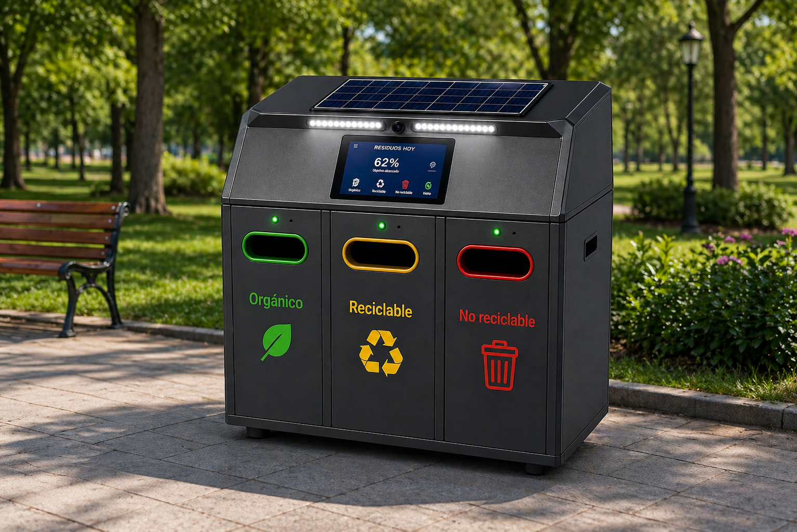

Contenedor inteligente para espacios urbanos y escolares
EcoHuella IA-Bio
Sistema ciberfísico que identifica residuos con visión computacional, muestra en pantalla el ícono del compartimento correcto y abre la compuerta cuando el sensor detecta la mano u objeto cerca.
Problema
Separar bien no debería depender de adivinar
En escuelas, parques y edificios públicos, muchos residuos terminan en el contenedor incorrecto por falta de señalización, prisa o dudas sobre el material. EcoHuella convierte ese momento en una interacción simple: detectar, clasificar, abrir la compuerta correcta y registrar el uso.
Objetivo del proyecto
Diseñar un prototipo accesible, autónomo y escalable que mejore la calidad del reciclaje desde el origen, usando IA ligera y componentes resistentes para operación continua.
Flujo de operación
Del residuo a la compuerta correcta
Captura
La cámara RGB toma imagen cuando hay movimiento frente al contenedor.
Inferencia
El modelo MobileNetV2 CDMX clasifica el residuo localmente en Jetson Nano.
Feedback visual
La pantalla TFT muestra el logo o ícono grande de la categoría detectada.
Apertura segura
El HC-SR04 confirma proximidad y el actuador abre el compartimento correcto.
Cerebro del prototipo
NVIDIA Jetson Nano para IA local
El diseño queda definido sobre Jetson Nano para ejecutar inferencia en el borde, controlar periféricos por GPIO/I2C y mantener la operación sin depender de internet durante cada clasificación.

Clasificación alineada al uso cotidiano
Tres decisiones claras
Orgánico
Restos de comida, cáscaras, hojas y residuos biodegradables.
Reciclable
Plástico, cartón, papel, vidrio y metales con potencial de recuperación.
No reciclable
Material contaminado, empaques mixtos o residuos sin ruta de reciclaje viable.